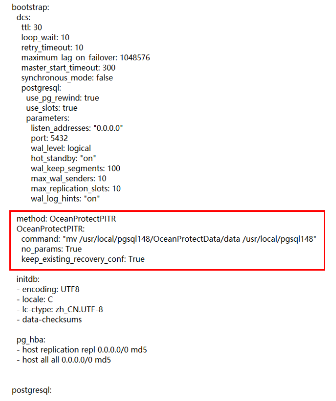

现象描述
对PostgreSQL数据库Patroni集群部署类型进行指定时间点的日志副本恢复操作时，恢复任务执行成功，但恢复后进入指定数据库查看数据，发现数据与指定恢复的时间点的数据存在不一致情况。
可能原因
在执行PostgreSQL数据库Patroni集群部署类型按指定时间点进行日志副本恢复前，需要按照前提条件对恢复目标位置的Patroni集群配置文件patroni.yml提前进行配置，如若未进行配置或配置位置不正确（如未正确在patroni.yml配置文件的bootstrap项下进行配置），则会出现数据不一致现象。
处理步骤
- 使用PuTTY，登录PostgreSQL数据库Patroni集群部署类型主机。

Patroni集群由多个节点构成，由于Patroni集群可以执行切主操作，故以下处理步骤应在所有的Patroni集群节点全部执行一遍，才可保证恢复时不会出现新问题。
- 按照前提条件内容对恢复目标位置的Patroni集群配置文件patroni.yml进行自定义配置，建议配置位置为patroni.yml文件的bootstrap项下方initdb项上方，如下图红框处，并且method应与initdb缩进相同。除此处配置外，无需在其余项下增加配置，否则一样会导致恢复任务出现故障或恢复任务执行成功但数据不一致。
配置样例为：

- 在Patroni集群所有节点配置完成后，重新执行按时间点进行日志副本恢复，恢复任务执行成功且数据成功恢复到指定时间点数据。